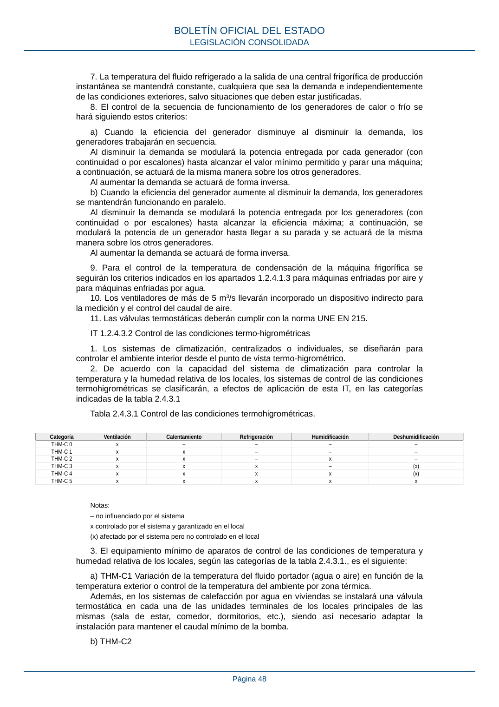

RITE · Página 48 · versión 2022-08-02
SHA256: ad1680c83bf4c7f5c656af1794c32ad0669ad9f36ac293737ff3f95177ff7b26 · página física 48 de 97 · métodos de encabezado
solo si están cotejados.
Formatos: Markdown · JSON de bloques · PDF p. 48 · imagen PNG
7. La temperatura del fluido refrigerado a la salida de una central frigorífica de producción instantánea se mantendrá constante, cualquiera que sea la demanda e independientemente de las condiciones exteriores, salvo situaciones que deben estar justificadas. 8. El control de la secuencia de funcionamiento de los generadores de calor o frío se hará siguiendo estos criterios: a) Cuando la eficiencia del generador disminuye al disminuir la demanda, los generadores trabajarán en secuencia. Al disminuir la demanda se modulará la potencia entregada por cada generador (con continuidad o por escalones) hasta alcanzar el valor mínimo permitido y parar una máquina; a continuación, se actuará de la misma manera sobre los otros generadores. Al aumentar la demanda se actuará de forma inversa. b) Cuando la eficiencia del generador aumente al disminuir la demanda, los generadores se mantendrán funcionando en paralelo. Al disminuir la demanda se modulará la potencia entregada por los generadores (con continuidad o por escalones) hasta alcanzar la eficiencia máxima; a continuación, se modulará la potencia de un generador hasta llegar a su parada y se actuará de la misma manera sobre los otros generadores. Al aumentar la demanda se actuará de forma inversa. 9. Para el control de la temperatura de condensación de la máquina frigorífica se seguirán los criterios indicados en los apartados 1.2.4.1.3 para máquinas enfriadas por aire y para máquinas enfriadas por agua. 10. Los ventiladores de más de 5 m3/s llevarán incorporado un dispositivo indirecto para la medición y el control del caudal de aire. 11. Las válvulas termostáticas deberán cumplir con la norma UNE EN 215. IT 1.2.4.3.2 Control de las condiciones termo-higrométricas 1. Los sistemas de climatización, centralizados o individuales, se diseñarán para controlar el ambiente interior desde el punto de vista termo-higrométrico. 2. De acuerdo con la capacidad del sistema de climatización para controlar la temperatura y la humedad relativa de los locales, los sistemas de control de las condiciones termohigrométricas se clasificarán, a efectos de aplicación de esta IT, en las categorías indicadas de la tabla 2.4.3.1 Tabla 2.4.3.1 Control de las condiciones termohigrométricas. Categoría Ventilación Calentamiento Refrigeración Humidificación Deshumidificación THM-C 0 x – – – – THM-C 1 x x – – – THM-C 2 x x – x – THM-C 3 x x x – (x) THM-C 4 x x x x (x) THM-C 5 x x x x x Notas: – no influenciado por el sistema x controlado por el sistema y garantizado en el local (x) afectado por el sistema pero no controlado en el local 3. El equipamiento mínimo de aparatos de control de las condiciones de temperatura y humedad relativa de los locales, según las categorías de la tabla 2.4.3.1., es el siguiente: a) THM-C1 Variación de la temperatura del fluido portador (agua o aire) en función de la temperatura exterior o control de la temperatura del ambiente por zona térmica. Además, en los sistemas de calefacción por agua en viviendas se instalará una válvula termostática en cada una de las unidades terminales de los locales principales de las mismas (sala de estar, comedor, dormitorios, etc.), siendo así necesario adaptar la instalación para mantener el caudal mínimo de la bomba. b) THM-C2 BOLETÍN OFICIAL DEL ESTADO LEGISLACIÓN CONSOLIDADA Página 48
